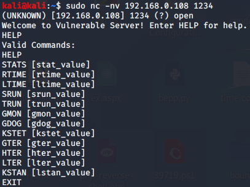

We ran immnuity debugger as well as vulnserver as administrator so that we directly get root access once we get the access
rght click on file and click on attach in immunity debugger and click on vulnserver
click on start button
by default conncet kali to vulnserver whoch runs on machone ip address and port 9999
Ethernet adapter Ethernet 3:
Connection-specific DNS Suffix . :
IPv4 Address. . . . . . . . . . . : 192.168.56.1
Subnet Mask . . . . . . . . . . . : 255.255.255.0
Default Gateway . . . . . . . . . :
--------------------------------------------------------------------------------------------------
Wireless LAN adapter Wi-Fi:
Connection-specific DNS Suffix . :
IPv4 Address. . . . . . . . . . . : 192.168.0.108
Subnet Mask . . . . . . . . . . . : 255.255.255.0
Default Gateway . . . . . . . . . : 192.168.0.1
port taken was of wifi not ethernet and it worked
sudo nc -nv 192.168.0.108 1234
C:\Users\windows\Desktop\ethical_hacking\0.Tools\vulnserver>vulnserver.exe 1234

focus would be on TRUN command here
we ll use spiking to find out whether trun command is vulnerable or not actually
so all theses commands that we see above we ll throw characters at them to find out whetger buffer overloww can be be achieved or not
fr spking using tool called general tcp

so we need the spike script too
gedit stats.spk

so first read the line then
we ll take the string called as stats
and then we ll send the string_varibale at it
when we ll spike it we ll send characters in all different variations to it


last screen is of immunity debugger
in a real test u let it run theorugh the entire process bt here we know it isnt vulnerable
now doing the same with TRUN to test its vulnerability

see we got access violations while execting boom!!
and immnity starts blinking also
so kill the process in kali
actually vulnserver also crashed bt u couldnt see it coz it was being held by immunity debugger once u detach it u ll get to klnow

seeing immunity we get to know

in a perfect scenario the TRUN command ke A's should ve filled only the buffer space bt on having look at EBP it is 414141.... whihc is just hex code for A's(so there are 4 A's)
so there are 4 bytes and we have fone over esp as well as well as EIP
we know if we can get over it we can point it to anything
so nect we ll learn how to fuzz the trun command so that we can get to know other method too and then we would find eip location to be malicious